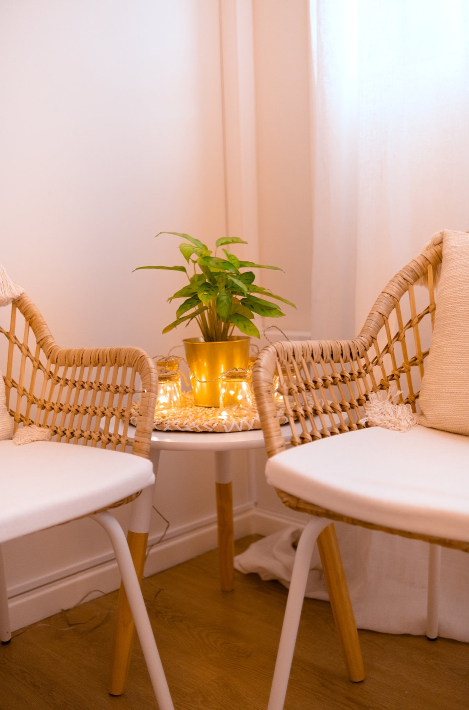
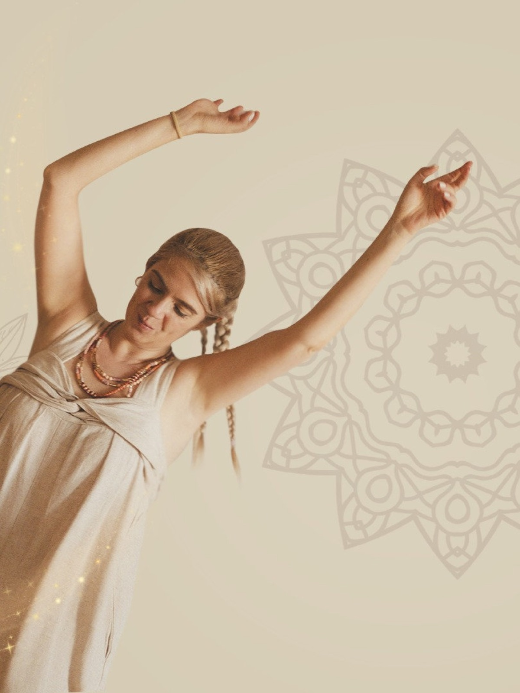
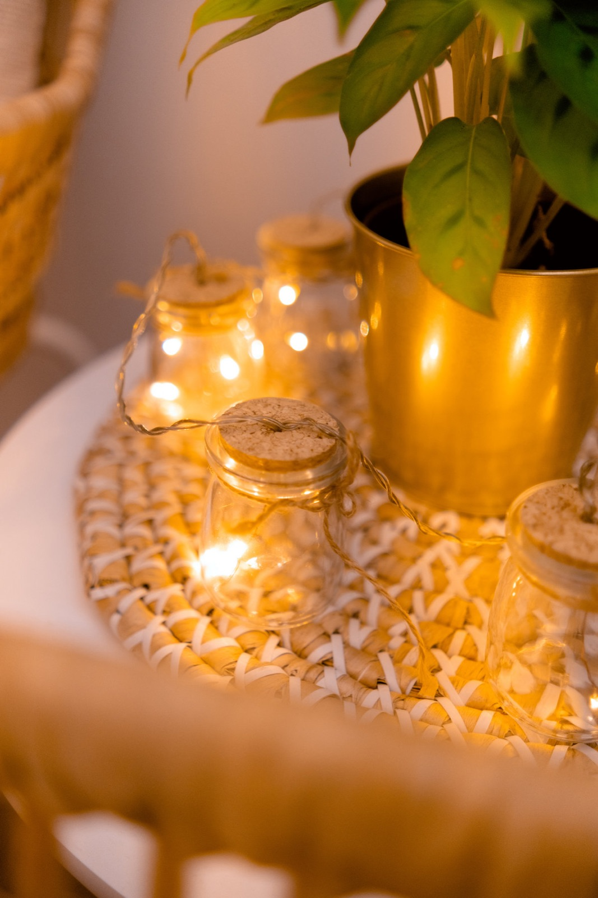
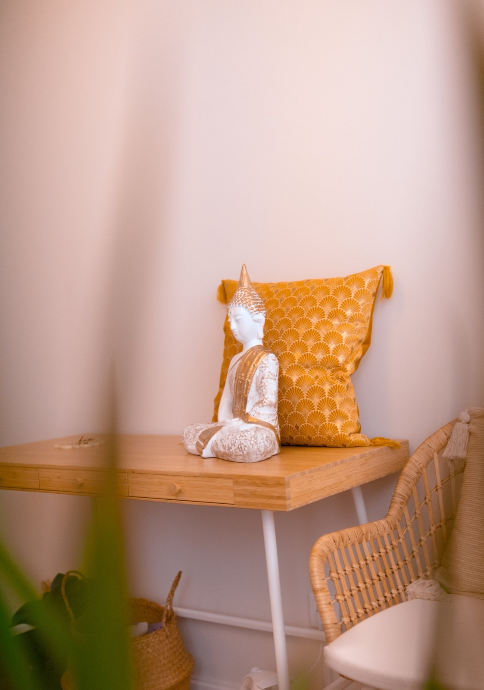

Com a Sara
Nutrição
Hábitos alimentares, metabolismo e estratégias à tua medida, sem planos iguais para todos.
Programa online de saúde integrada
Cuidar da saúde como um todo.
Três meses em que Nutrição, Psicologia e Movimento trabalham juntas, semana a semana, para compreenderes a tua relação com a comida e construíres hábitos que ficam.
Sara Lucas e Lisa Bompastor
Nutricionista e psicoterapeuta, lado a lado
Não é um plano alimentar igual para todos nem um desafio de emagrecimento. É um acompanhamento integrado, com respeito pelo teu corpo e pelo teu ritmo.
Com a Sara
Hábitos alimentares, metabolismo e estratégias à tua medida, sem planos iguais para todos.

Com a Lisa
A relação com a comida e com o corpo, os padrões emocionais e a motivação para mudar.

Com a Lisa e a Sara
A Lisa traz o corpo e o movimento para o trabalho psicológico. A Sara orienta dois treinos por semana, em direto e gravados.
Sessões individuais, treinos e encontros de grupo, com uma plataforma e um espaço privado para não fazeres este caminho sem apoio.
6
Sessões individuais
3 consultas de nutrição com a Sara e 3 sessões de psicologia com a Lisa.
24
Treinos com a Sara
Dois por semana, de 60 minutos, online e em direto. Ficam gravados.
12
Encontros de grupo
À quinta-feira, às 21h, 45 minutos para aprender, refletir e partilhar.
Plataforma de acompanhamento
Questionários e relatório inicial, planos e materiais à tua medida, gravações, desafios e check-ins.
Acompanhamento contínuo
Um espaço privado de apoio e partilha durante os três meses.

Um grupo pequeno
Entre 8 e 14 pessoas, para que cada uma tenha espaço.
O método
Mês 1
Explorar hábitos, alimentação, emoções e necessidades individuais.
Mês 2
Experimentar estratégias práticas, trabalhar a motivação e construir novas rotinas.
Mês 3
Consolidar mudanças, fortalecer a autonomia e preparar a continuidade.
Encontros de grupo
A Sara e a Lisa alternam, semana a semana. Começam juntas e acabam juntas. Os horários dos treinos e das sessões individuais combinam-se contigo.
Quem acompanha
Nutrição e Treino
Nutricionista e personal trainer. Começou na nutrição pediátrica e dedica-se hoje à nutrição funcional e integrativa, como caminho para uma saúde plena e para o cuidado de si.
Psicologia e Movimento
Psicoterapeuta, especializada em Dança Movimento Terapia. Acompanha pessoas de várias idades, em individual e em grupo, no Porto, em Lisboa e em Barcelona.

De 10 de fevereiro a 10 de maio de 2027, online. Condições especiais da 1.ª edição.
Programa completo
480 €
Poupas 45 € em relação às prestações.
Em três prestações
3 × 175 €
Total de 525 €.
A participação está sujeita a uma avaliação de adequação. Os resultados variam de pessoa para pessoa e dependem das necessidades e circunstâncias individuais.
Candidatura
Candidatas-te a partir de janeiro de 2027.
Avaliação de adequação, para perceber se este é o programa certo para ti, neste momento.
Lugar confirmado e começamos a 10 de fevereiro.